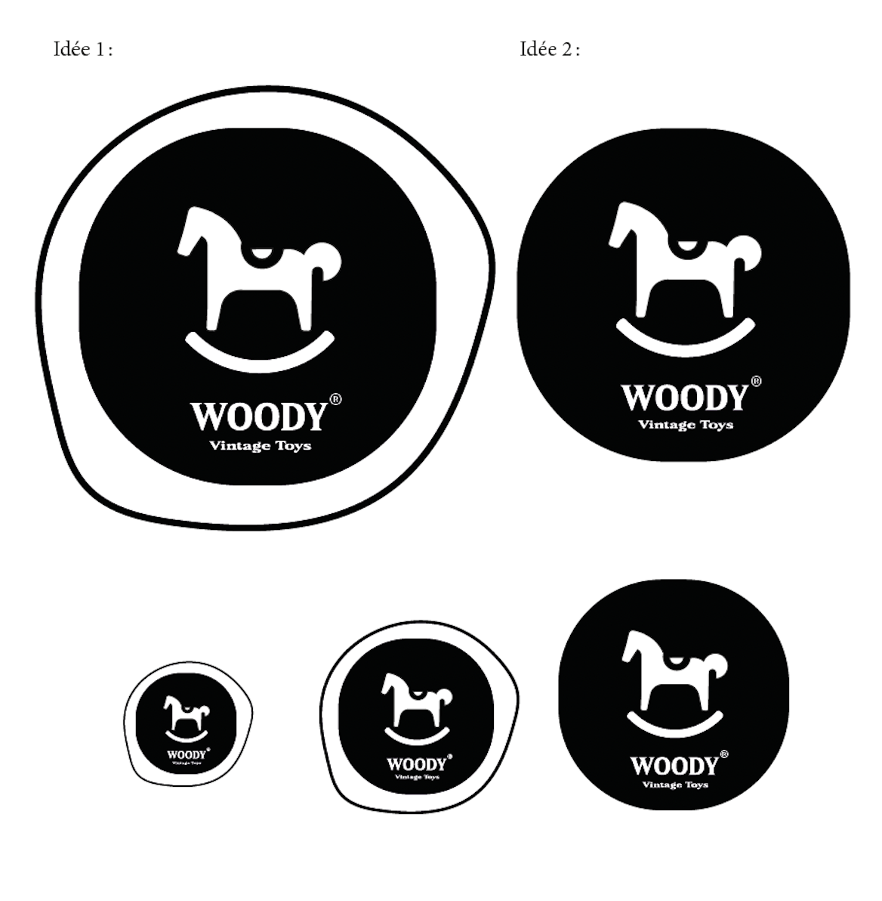
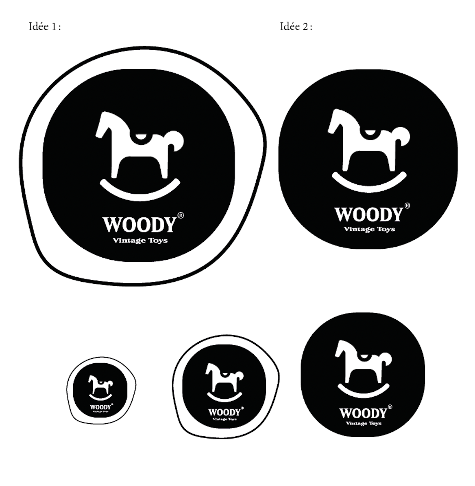
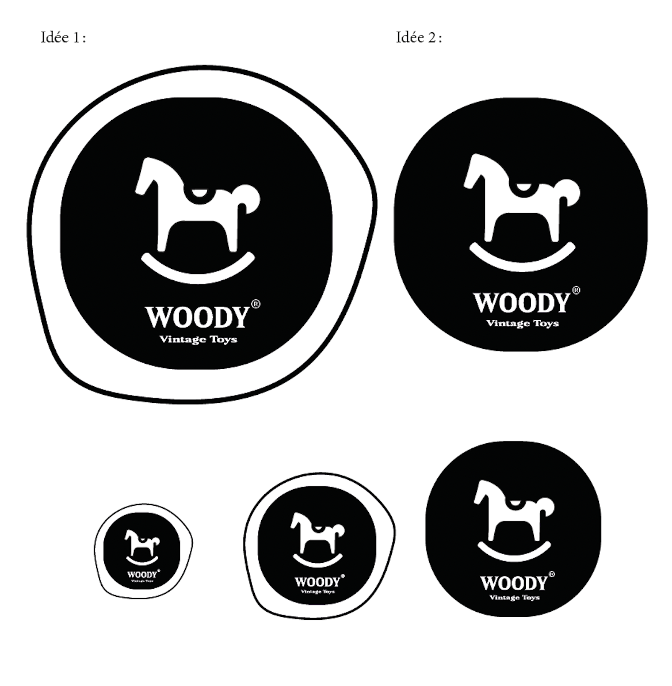

Comment explorer un symbole classique pour en révéler toute sa richesse créative ? À partir du cheval à bascule imposé, j’ai développé une pluralité de logos, en quatre heures, pour une boutique parisienne de jeux en bois à l’ancienne. L’objectif était d’exploiter au maximum les possibilités graphiques de ce symbole intemporel, en proposant des déclinaisons variées qui reflètent les valeurs de la boutique : qualité et durabilité à l’ancienne. Chaque version, qu’elle soit vintage, ludique ou moderne, offre une vision différente, permettant de répondre aux attentes d’une clientèle parisienne en quête de jouets authentiques et robustes.
How can a classic symbol be explored to uncover its full creative potential? Using the imposed rocking horse, I developed a variety of logo concepts in four hours for a Parisian boutique specializing in traditional wooden toys. The goal was to push the graphic possibilities of this timeless symbol by proposing diverse iterations that reflect the boutique’s values: traditional quality and durability. Each version—whether vintage, playful, or modern—offers a unique perspective, catering to Parisians seeking authentic and long-lasting toys.
Descembre 2024 - Projet de 2e année de DnMade.
